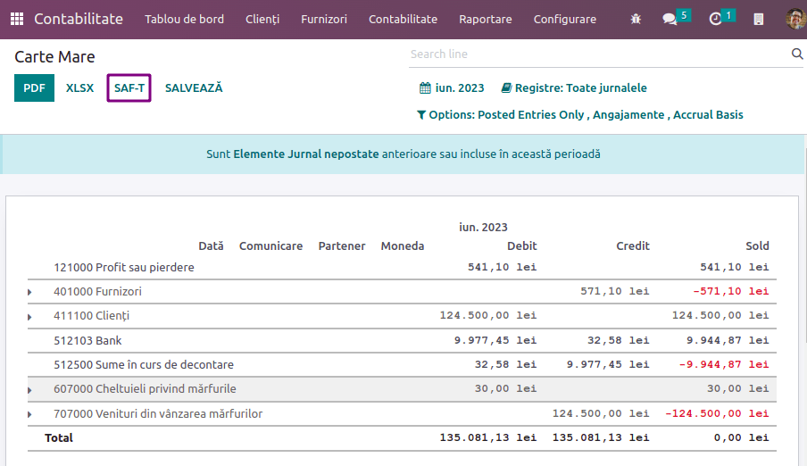

Rumania¶
Configuración¶
Instale los siguientes módulos para obtener todas las funciones de la localización rumana.
Nombre |
Nombre técnico |
Descripción |
|---|---|---|
Rumania - Contabilidad |
|
Paquete de localización fiscal predeterminado. |
Exportación rumana SAF-T |
|
Módulo para generar la declaración D.406 en formato SAF-T. |

Declaración D.406¶
A partir del 1° de enero del 2023, las empresas registradas como personas morales en Rumania deben declarar sus datos contables de manera mensual a la Agencia Nacional de Administración Fiscal de Rumania, o trimestral a través de la declaración D.406.
Odoo le proporciona todo lo que necesite para exportar sus datos de esta declaración en formato SAF-T XML, el cual puede validar y firmar usando el software proporcionado por la Agencia Nacional de Administración Fiscal.
Nota
Actualmente, Odoo solo permite generar la declaración mensual/trimestral D.406 (que contiene asientos contables, facturas, facturas de proveedor y pagos). La declaración anual (incluyendo los activos) y la declaración sobre pedido (incluyendo el inventario) aún no son compatibles con Odoo.
Configuración¶
Empresa¶
En Configruación –> Ajustes generales, en la sección Empresas haga clic en Actualizar información y complete la información de la empresa de País, Ciudad, y Número de teléfono.
Proporcione el número CUI de su empresa o su CIF (para empresas extranjeras) en el campo ID de la empresa sin el prefijo
RO(por ejemplo,18547290).Si su empresa está registrada a efectos de IVA en Rumania, complete el campo numérico NIF incluyendo el prefijo
RO(por ejemplo,RO18547290). Si la empresa no está registrada a efecto de IVA en Rumania, no debe completar el campo NIF.Abra la aplicación Contactos y busque su empresa. Abra el perfil de su empresa y en la pestaña de Contabilidad haga clic en Agregar una línea y agregue su número de cuenta bancaria, si no lo ha hecho ya. Asegúrese de que el perfil esté establecido como Empresa encima del nombre.
Debe tener por lo menos un contacto vinculado a su empresa en la aplicación Contactos. Si no lo tiene, cree uno nuevo haciendo clic en Nuevo, establézcalo como Individual, y seleccione su empresa en el campo Nombre de la empresa.
Plan de cuentas¶
Para generar un archivo por cobrar por la Agencia Nacional de Administración Fiscal de Rumania, el plan de cuentas no debe desviarse de un plan de cuentas oficial, como:
el plan de cuentas para empresas comerciales (PlanConturiBalSocCom), que viene instalado de manera predeterminada al crear una empresa con la localización rumana, o;
el plan de cuentas para las empresas que siguen las Normas Internacionales de Información Financiera (IFRS, por sus siglas en inglés) (PlanConturiIFRS).
En Ajustes –> Contabilidad, en la sección de localización rumana, establezca la Base contable fiscal para reflejar las normas de contabilidad y los planes de cuentas que usa la empresa.
Ver también
Cliente y proveedor¶
Complete el País, la Ciudad, y el Código postal de cada contacto que aparezca en sus facturas, facturas de proveedor o pagos a través de la aplicación Contactos.
Para los contactos que sean empresas, debe completar el NIF (incluyendo el prefijo del país) en el campo NIF. Si el contacto es una empresa ubicada en Rumania, deberá introducir el número CUI (sin el prefijo “RO”) en el campo ID de la empresa.
Impuesto¶
Debe indicar el Tipo de impuesto rumano SAF-T (número de 3 dígitos) y el Código de impuesto rumano SAF-T (número de 6 dígitos) en cada impuesto que utilice. Esto ya está hecho para los impuestos que existen de manera predeterminada en Odoo. Para hacerlo, vaya a , seleccione el impuesto que desea modificar, haga clic en la pestaña de Opciones avanzadas y complete los campos de tipo de impuesto y código de impuesto.
Nota
El tipo de impuesto y el código de impuesto son códigos que define la Agencia Nacional de Administración Fiscal de Rumania para la declaración D.406. Puede encontrarlos en la hoja de Excel publicada como guía para completar la declaración, la cual puede encontrar en el sitio web de la Agencia Nacional de Administración Fiscal de Rumania.
Ver también
Producto¶
Para algunos tipos de transacciones de bienes, debe configurar el Código Intrastat (Cod NC) en el producto, pues así lo requiere la ley rumana:
transacciones de importación / exportación;
adquisición / aprovisionamiento de productos alimenticios sujetos a una tasa de IVA reducida;
movimientos intra-comunitarios sujetas al reporte intrastat;
adquisiciones / aprovisionamientos sujetos a la tasa local de IVA revertido (dependiendo del Cod NC); y
transacciones con productos gravables para cuyas obligaciones gravables se determinan de acuerdo al Cod NC.
Si el código Intrastat no está especificado en un producto que no es servicio, se utilizará el código predeterminado “0”.
Para configurar los Códigos Intrastat, vaya a , seleccione un producto y en la pestaña de Contabilidad, establezca un Código de mercancía.
Ver también
Factura de proveedor¶
Debe seleccionar la casilla ¿Es una autofactura (RO)? en la pestaña de Otra información para cualquier factura de proveedor que sea una autofactura (por ejemplo, una factura de proveedor que usted mismo emitió a cause de no recibir ningún documento para factura del proveedor).
Generar la declaración¶
Exportar sus datos¶
Para exportar el XML para la declaración D.406, vaya a y haga clic en SAF-T.
Después podrá validar y firmar el archivo XML usando el software de validación de la Agencia Nacional de Administración Fiscal de Rumania, DUKIntegrator.
Firma del reporte¶
Descargue e instale el software de validación DUKIntegrator que está disponible en el sitio web de la Agencia Nacional de Administración Fiscal de Rumania.
Una vez que haya generado el XML, abra “DUKIntegrator” y seleccione el archivo que acaba de generar.
Haga clic en Validare + creare PDF para crear un PDF sin firma que contenga su reporte o Validare + creare PDF semnat para crear un PDF firmado que contenga su reporte.

Si el validador DUKIntegrator detecta errores o inconsistencias en sus datos, generará un archivo explicando los errores. En este caso, necesita corregirlos antes de que pueda enviar el reporte a la Agencia Nacional de Administración Fiscal de Rumania